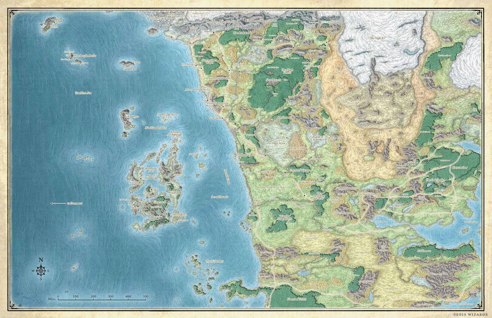

O Mundo de Faérun

A história de Faérum começa antes mesmo do próprio plano existir.
Personagens da História
- Raven Queen
- Vivian
- Morana
- Eliandrell
- Vésper Silverleaf
- Niddhog
- Strahd von Zarovich
- Asmodeus
- Ilmater
- Void
- Kurma
- Taklar
- Iv'vakri
- Demi'vakri
- Bad Dragon
- Jean Alberto de Sousa
- Litío Tjón
- Drezi Zavriel